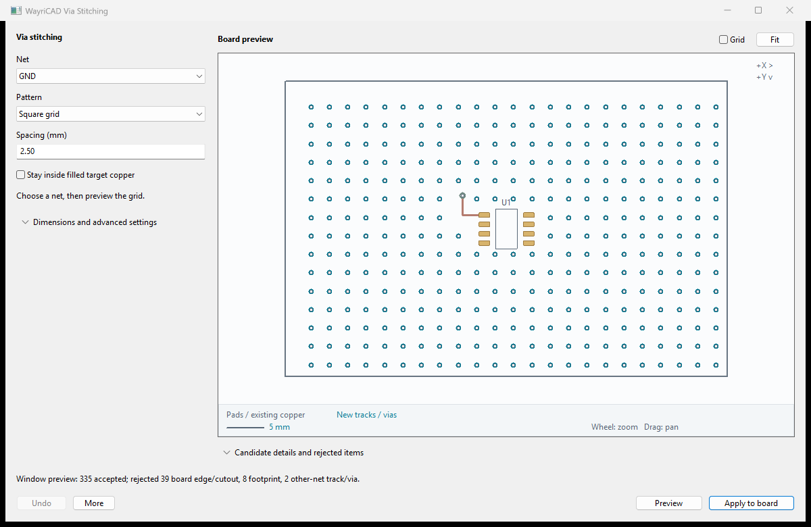

A fully local routing tool for PCB Editor. No hosted UI or remote preview assets are required.
1. Configure geometry and pad scope or target net.
2. Click Preview. The canvas and result table show accepted candidates and rejection reasons. Preview creates no PCB copper.
3. Inspect the result, then Apply to board. A named WayriCAD group contains the committed geometry. Run KiCad DRC before saving or manufacturing.
The optional More → Review placement again command rechecks the board snapshot and prepares the same geometry; it is not required before Apply. More → Clear preview discards unattached candidates. Settings changes invalidate the preview. Board changes require a new preview. Plugin Undo/Redo preserves a recoverable group; reopen the tool to find its existing named groups.
Choose a PCB net and square or staggered grid. Configure grid spacing, via diameter/drill, copper clearance, edge inset, and uniform or density profiles. Expand Area and exclusion settings to limit the rectangle, use selected-item bounds, or exclude footprints by reference.
By default candidates must fit completely inside filled target-net copper. Missing/unfilled target zones fail explicitly. Other-net copper and via keepouts are always excluded; same-net tracks and footprint envelopes have optional exclusions. The complete via radius plus clearance is checked against conservative obstacle envelopes, and vias remain inside the closed board outline, including cutouts. Too-dense grids and more than 50,000 candidates fail before modifying the board.
Primary choices remain visible; detailed dimensions and rejection tables are collapsed until needed. The clean, neutral canvas shows footprint outlines and references, real native pad polygons/rotation, existing copper, and generated geometry. A visible legend, millimetre scale, and coordinate orientation support review; the grid is optional and off by default. The resizable canvas supports wheel zoom at the cursor, drag to pan, double-click to fit, and via picking for coordinates. Pads, existing tracks/vias, zone outlines, and board edges provide context. Candidate copper and drill sizes use board units. Arc tracks currently appear as conservative bounding envelopes; native pads use their effective polygons; the IPC fallback uses supported padstack shapes. The canvas is a review aid, not a replacement for PCB Editor or DRC.
Use KiCad 10's bundled Python so `pcbnew` is available. List JSON option names and actual project choices with `python -m wayricad_runtime.cli fanout settings --board source.kicad_pcb` (or `stitching settings`). Settings are a JSON object, for example:
{"net_choice":"GND","pattern":"Staggered grid","spacing":2.5,"diameter":0.6,"drill":0.3,"clearance":0.2,"require_target_zone":true}
python -m wayricad_runtime.cli stitching plan --board source.kicad_pcb --settings settings.json --output plan.json --svg preview.svg python -m wayricad_runtime.cli stitching apply --board source.kicad_pcb --plan plan.json --output routed.kicad_pcb
Plan is read-only and produces reviewable JSON plus an optional standalone local SVG. Apply recomputes and checks the reviewed geometry and board fingerprint, then writes a new `.kicad_pcb` file. It refuses source overwrites, existing destinations, empty plans, and stale or altered candidate geometry. The source remains unchanged.
Native in-memory board tests, file round-trips, and hidden wx frame smoke checks run against KiCad 10. The suite also packages an IPC entry point for forward compatibility; supported geometry depends on the live IPC API. Unsupported capabilities fail explicitly. Live KiCad 11 behavior must be validated against its released runtime.
Synthetic SOIC demonstration board; all resources bundled locally.

Spacing, diameter, drill, clearances, inset and region coordinates are millimetres. Grid style changes candidate positions; it does not prove ground continuity or electrical return-path quality.